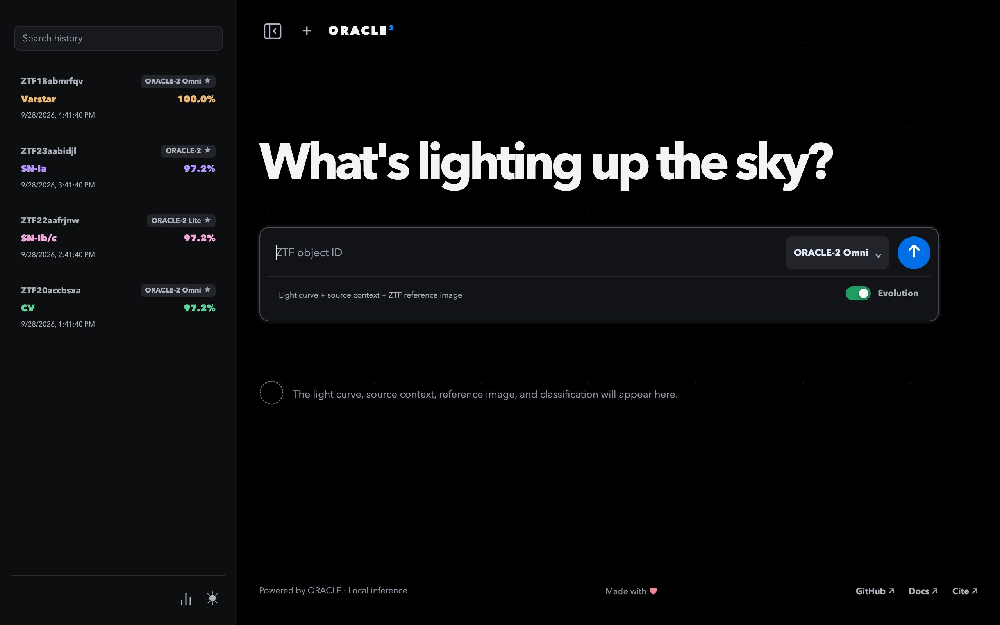
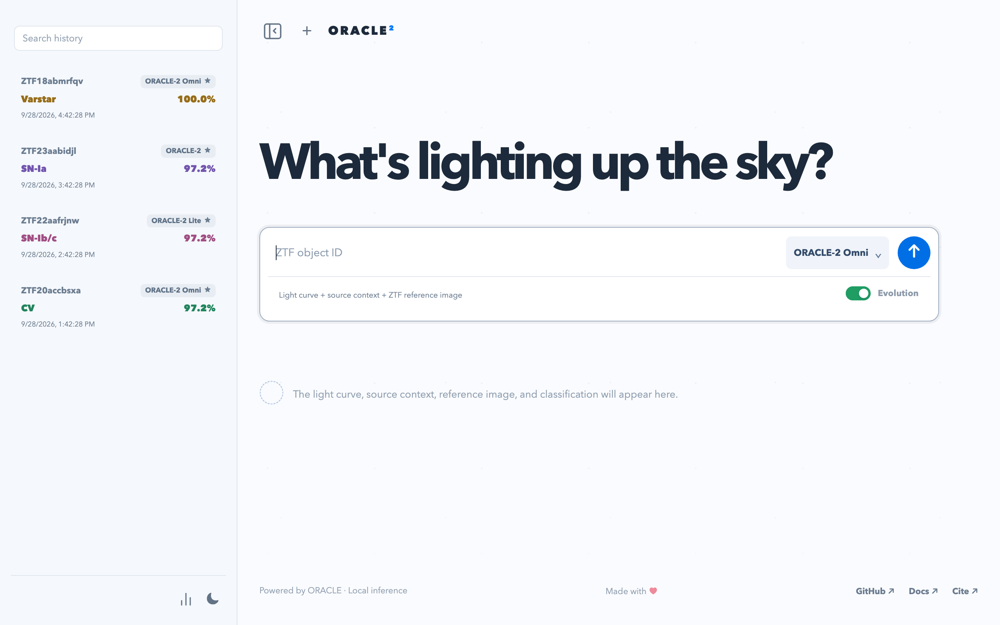
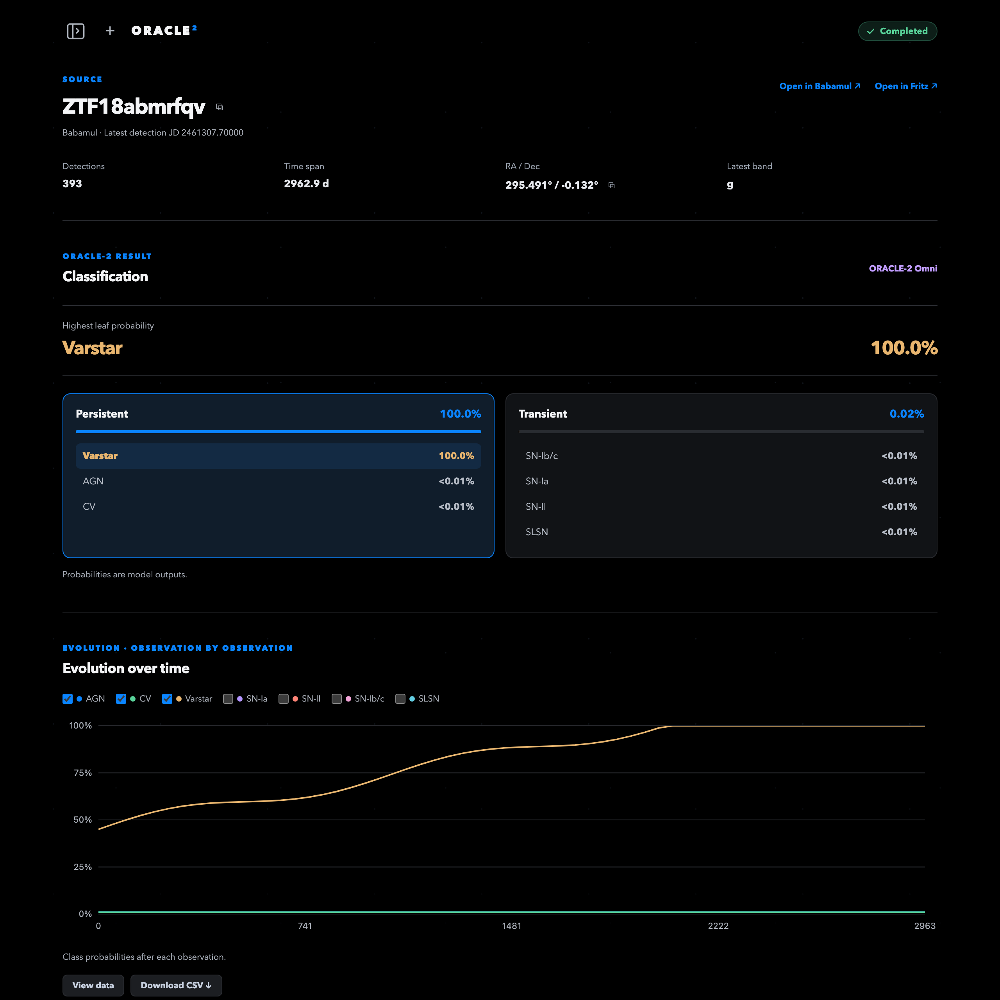
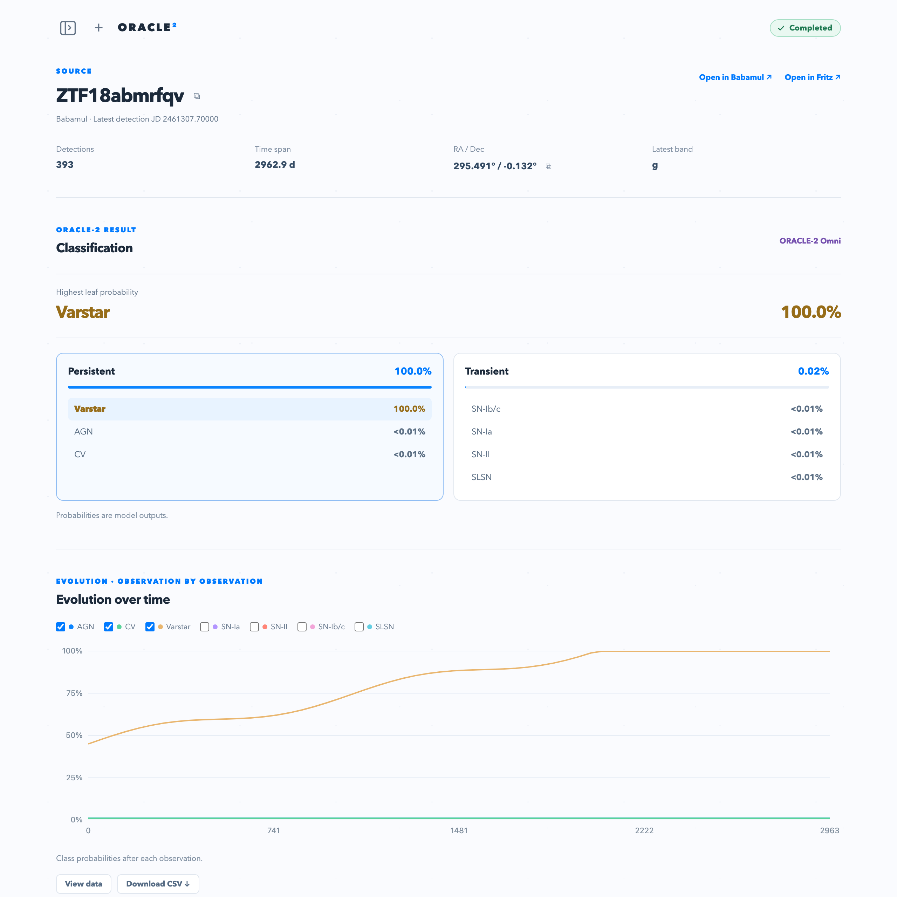

ORACLE-2 interface


Main page
Search a ZTF source, choose a model, and reopen past classifications from the history sidebar.
Classification page
Inspect the leading class, hierarchical probabilities, and its evolution across observations.

